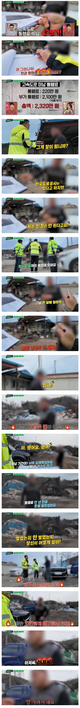

??????

??????
분할 납부 한다고 함은 납부하려는 의지를 표해서 현 상황을 면피하기 위한 용도임
우리와는 사고방식이 다릅니다
그럼 돈을 처음에 내고 타던가 병신인가..
지가 똑똑한줄 아는 멍청한새끼들 특징
꼬우면 국도 타시지 그러셨어요
역시! 보법이 달라!!
지하철도 그렇고 뭐 10배, 20배 때리는 건 좀 뭔가 엄청나네ㄷㄷ
그렇게 하지말라고 부과금을 엄청나게 높게 만든건데 그래도 한다면 부과해야지
배째라면 배째주는게 인지상정이다
그러니까 말야
40배 50배는 때려야하는데
정당한 댓가 지불없이 지하철이든 도로든 이용하는건 상점에 들어가서 물건 그냥 들고 나오고 식당에 가서 무단취식하고 나오는거랑 똑같은건데,
개붕쿤처럼 한번쯤 할수있는 실수 + 애교로 봐줄수 있는 일탈 쯤으로 여기는 사람들이 있네.
통행료는 한두번 안낸거는 그냥 내라고만 하지 10배 때리지도 않음ㅋㅋㅋㅋ 저건 진짜 상습인 애들 잡아서 저렇게 때림
잘 잡지도 않는데 얼마나 상습적으로 했으면 저렇게 잡혔겠어...
좋은말할때 내라는뜻인데 그럼에도 안내서 배째지는 멍청한자들이 많네..
강철중한테 삥뜯기던 과일장수 멘트네 ㅋㅋ
결말어케됨?
돈 안내면서 다닐때는 좋다고 똑똑하다고 생각하면서 탔겠지?? 걍 바로 차 압류 때리면 좋겠다 ㅋㅋ
저거 유튜브에 있어서 보는데, 고생하신다 싶더라.
근데 왜 운전중에 다른분들도 있는데 운전자가 휴대전화를 사용하는지는 모르겠고, 그걸 또 편집없이 내보낸 KBS도 황당하긴 했음.
저딴 ㅂㅅ들은 어케 운전면허 땃는지 몰라 ㅋㅋ
한문철 컨텐츠가 마르지 않는 이유와 비슷하지 않을까
사형시켜라
저거 안내고 다니는 새끼들 사회에 있어봤자 걍 잠재적 범죄자다
씨까지 다 죽여야됨
배가르면 용서해주자
ㄹㅇ ㄱㄱㅋㅋㅋㅋㅋㅋ
분쇄기에 갈아버려야하는데
멀잘했다고큰소리지??
걍 체포를 해야돼 고속도로순찰대는 뭐하냐 저런놈 안잡아가고
그럼 차량 중고로 팔자
찾아가서 실랑이 할 필요없이 주소지로 이달 내로 안내면 고소 통보하고 변호사 기타 부대비용까지 물게 하면 되잖아 그래도 안내면 자산 압류하고.. 저런 제정신아닌애들이랑 감정싸움해봤자 괜한 사람 스트레스 받는것 같은데
방송이라 보여주기식 하는 걸지도
돈내라면좀 내라 씨발놈아
전에 아는 사람이 뭐였더라? 자동차세였나 미납으로 대형트럭 번호판 압수당했는데 저 사람처럼 길길이 날뛰어서 알아보니까
그 납부하라고 우편이 좀 이상한 주소로 가고있었음
나도 그동네 주소를 아는데 근처긴 한데 전혀 상관없는 주소로 납부하라고 보내놓고 전화연락 한 번도 없이 밤에 휙 떼갓다고 화를 엄청 냄 ㅋㅋ
체납 시리즈 유튜브로 종종 보는데 체납자 공통점이 있음
1. 자기는 납부 성실히 했다고 함
체납금이 몇천만에서 억단위 인데 달에 천원 만원 단위 내놓고 성실하게 납부했다함
2. 분할 납부 한다고 함
내 생각에는 1번처럼 푼돈 내면서 죽을때 까지 납부하겠다 이런 느낌 같음
3. 적반하장
그 외 몇개 더 있는데 궁금하면 함 보셈 재밌음 ㅋㅋ